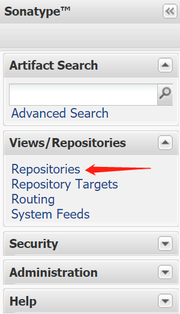
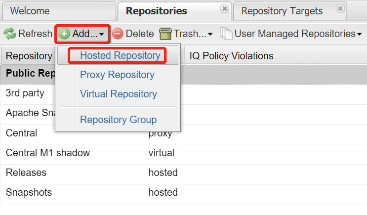
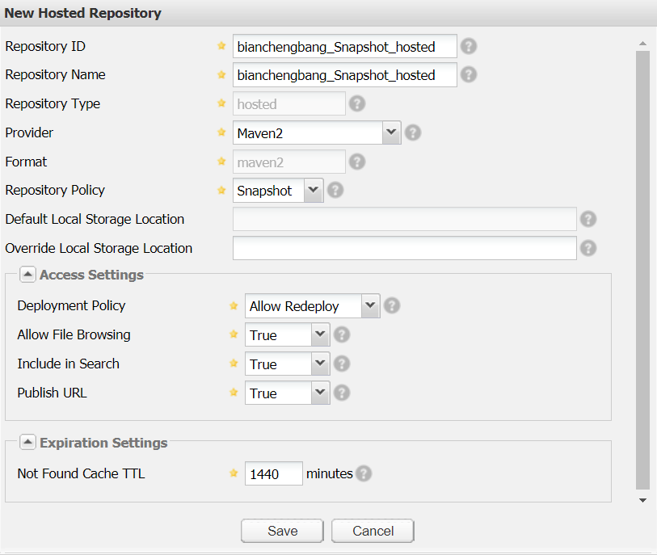
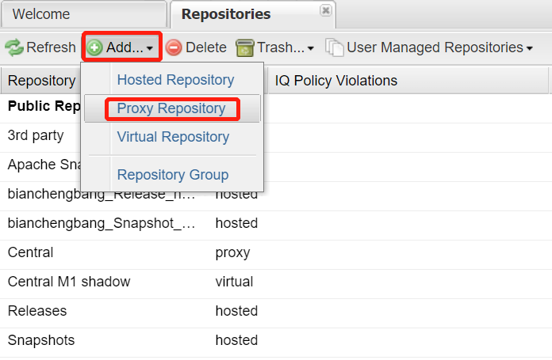
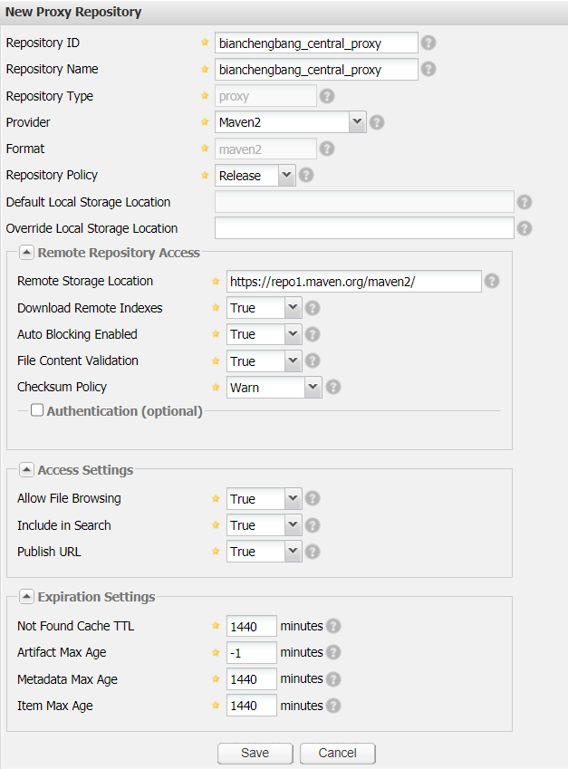
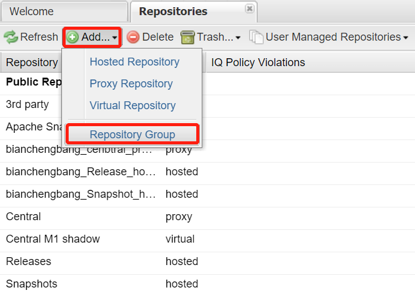
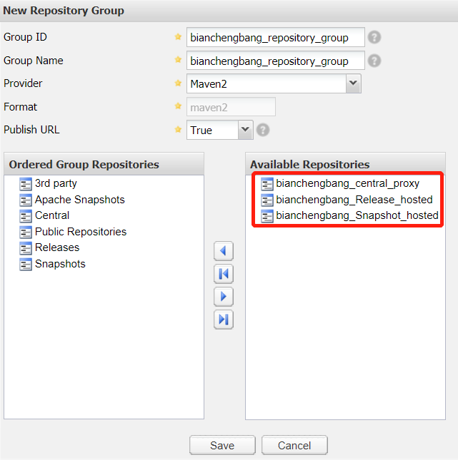

Nexus创建仓库
本节，我们将介绍如何创建自定义宿主仓库、代理仓库和仓库组，为后面的工作做准备。
1. 点击左边导航栏中的 Repositories，如下图。
2. 点击 Nexus 仓库列表上方的 Add... 按钮，在下拉菜单中选择 Hosted Repository，如下图。
3. 在宿主仓库配置界面，填写对应信息，然后点击 Save 按钮进行保存，如下图。
宿主仓库配置如下：
4. 查看 Nexus 仓库列表，可以看到自定义的宿主仓库已经创建完成，如下图。
重复以上步骤，再创建一个名称为 bianchengbang_Release_hosted ，策略为 hosted 的宿主仓库。
点击 Nexus 仓库列表上方的 Add... 按钮，在下拉菜单中选择 Proxy Repository，如图 5 所示。
在代理仓库配置界面，填写对应信息，然后点击 Save 按钮进行保存，如图 6 所示。
代理仓库配置中，仓库 ID、仓库名称、Provider、Policy 以及 Default Local Storage Location 等配置的含义与宿主仓库相同，不再赘述。需要注意的是，代理仓库的 Repository Type 的取值是 proxy。
代理仓库配置如下表。
下面我们将创建一个仓库组，并将刚刚创建的 3 个仓库都聚合起来，操作步骤如下。
点击仓库列表上方的 Add... 按钮，在下拉菜单中选择 Repository Group，如下图。
在仓库组配置界面，填写对应信息，并将 bianchengbang_central_proxy、bianchengbang_Release_hosted 和 bianchengbang_Snapshot_hosted 3 个仓库添加到仓库组中，最后点击 Save 按钮进行保存，如下图。
查看 Nexus 仓库列表，可以看到 bianchengbang_repository_group 仓库组已经创建完成，如下图。
创建 Nexus 宿主仓库
首先，我们需要创建两个宿主仓库，分别用来存储从本地上传到 Nexus 的 Snapshot 和 Release 版本的构件，操作步骤如下。1. 点击左边导航栏中的 Repositories，如下图。

图1：Nexus 导航
2. 点击 Nexus 仓库列表上方的 Add... 按钮，在下拉菜单中选择 Hosted Repository，如下图。

图2：添加宿主仓库
3. 在宿主仓库配置界面，填写对应信息，然后点击 Save 按钮进行保存，如下图。

图3：配置宿主仓库
宿主仓库配置如下：
| 配置 | 说明 |
|---|---|
| Repository ID | 仓库 ID。 |
| Repository Name | 仓库名称。 |
| Repository Type | 仓库的类型，如 hosted、proxy 等等。 |
| Provider | 用来确定仓库的格式，一般默认选择 Maven2。 |
| Repository Policy | 仓库的策略。 |
| Default Local Storage Location | 仓库默认存储目录，例如 D:\nexus-2.14.20-02-bundle\sonatype-work\nexus\indexer\bianchengbang_Snapshot_hosted_ctx。 |
| Override Local Storage Location | 自定义仓库存储目录。 |
| Deployment Policy | 仓库的部署策略。 |
| Allow File Browsing | 用来控制是否允许浏览仓库内容，一般选择 true。 |
| Include in Search | 用来控制该仓库是否创建索引并提供搜索功能。 |
| Publish URL | 用来控制是否通过 URL 提供服务。 |
| Not Found Cache TTL | 缓存某构件不存在信息的时间，默认取值为 1440，表示若某一个构件在仓库中没有找到，在 1440 分钟内再次接收到该构件的请求，则直接返回不存在信息，不会再次查找。 |
4. 查看 Nexus 仓库列表，可以看到自定义的宿主仓库已经创建完成，如下图。
图4：Nexus 仓库列表（猛击图片，查看原图）
重复以上步骤，再创建一个名称为 bianchengbang_Release_hosted ，策略为 hosted 的宿主仓库。
图5：Nexus 仓库列表-宿主仓库（猛击图片，查看原图）
创建 Nexus 代理仓库
下面我们创建一个代理仓库，用来下载和缓存中央仓库的构件，操作步骤如下。点击 Nexus 仓库列表上方的 Add... 按钮，在下拉菜单中选择 Proxy Repository，如图 5 所示。

图5：添加代理仓库
在代理仓库配置界面，填写对应信息，然后点击 Save 按钮进行保存，如图 6 所示。

图6：Nexus 代理仓库配置界面
代理仓库配置中，仓库 ID、仓库名称、Provider、Policy 以及 Default Local Storage Location 等配置的含义与宿主仓库相同，不再赘述。需要注意的是，代理仓库的 Repository Type 的取值是 proxy。
代理仓库配置如下表。
| 配置 | 说明 |
|---|---|
| Remote Storage Location | 远程仓库或中央仓库的地址，它是 Nexus 代理仓库最重要得配置，必须输入有效值，通常取值为 https://repo1.maven.org/maven2/。 |
| Download Remote Indexes | 是否下载远程仓库的索引。 |
| Auto Blocking Enabled | 是否启用自动阻止，即当 Nexus 无法连接中央仓库或远程仓库时，是否一直等待。取值为 true 表示不再等待，直接通知客户端无法连接，并返回。 |
| File Content Validation | 是否启用文件内容校验。 |
| Checksum Policy | 配置校验和出错时的策略，用户可以选择忽略、警告、记录警告信息或拒绝下载等多种策略。 |
| Artifact Max Age | 构件缓存的最长时间，对于发布版本仓库来说，默认值为 -1，表示构件缓存后，就一直保存着，不再重新下载。对于快照版本仓库来说，默认值为 1440 分钟，表示每隔一天重新缓存一次代理的构件。 |
| Metadata Max Age | 仓库元数据缓存的最长时间。 |
| Item Max Age | 项目缓存的最长时间。 |
创建 Nexus 仓库组
下面我们将创建一个仓库组，并将刚刚创建的 3 个仓库都聚合起来，操作步骤如下。点击仓库列表上方的 Add... 按钮，在下拉菜单中选择 Repository Group，如下图。

图7：Nexus 添加仓库组
在仓库组配置界面，填写对应信息，并将 bianchengbang_central_proxy、bianchengbang_Release_hosted 和 bianchengbang_Snapshot_hosted 3 个仓库添加到仓库组中，最后点击 Save 按钮进行保存，如下图。

图8：Nexus 仓库组配置
查看 Nexus 仓库列表，可以看到 bianchengbang_repository_group 仓库组已经创建完成，如下图。
图9：Nexus 仓库列表-仓库组（猛击图片，查看原图）
关注公众号「站长严长生」，在手机上阅读所有教程，随时随地都能学习。内含一款搜索神器，免费下载全网书籍和视频。

微信扫码关注公众号